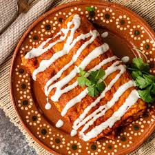

Enchiladas

Description
Enchiladas are a classic Mexican dish consisting of rolled tortillas filled with a savory mixture, typically chicken, beef, or cheese. These tortillas are then covered with a rich enchilada sauce and baked until hot and bubbly. The result is a flavorful, comforting dish with tender, slightly crispy edges. Topped with melted cheese and often garnished with sour cream and fresh cilantro, enchiladas offer a perfect balance of savory, spicy, and creamy flavors, making them a beloved choice for a hearty meal.
Ingredients:
- 12 corn tortillas
- 2 cups cooked chicken
- 1 cup shredded cheese
- 1 cup enchilada sauce
- 1 medium onion, finely chopped
- 2 cloves garlic, minced
- 1 cup sour cream
- 1 tablespoon olive oil
- 1 teaspoon ground cumin
- 1/2 teaspoon chili powder
Steps:
- Preheat Oven: Preheat your oven to 375°F
- Cook Onions and Garlic: Sauté in olive oil until soft. Add chicken, cumin, chili powder, salt, and pepper
- Warm Tortillas: Heat until pliable.
- Assemble Enchiladas: Fill tortillas with chicken mixture, roll up, and place in a baking dish. Top with enchilada sauce and cheese.
- Bake: Cook for 20-25 minutes until cheese is melted.
- Serve: Garnish with sour cream and cilantro if desired.
Enjoy your enchiladas!